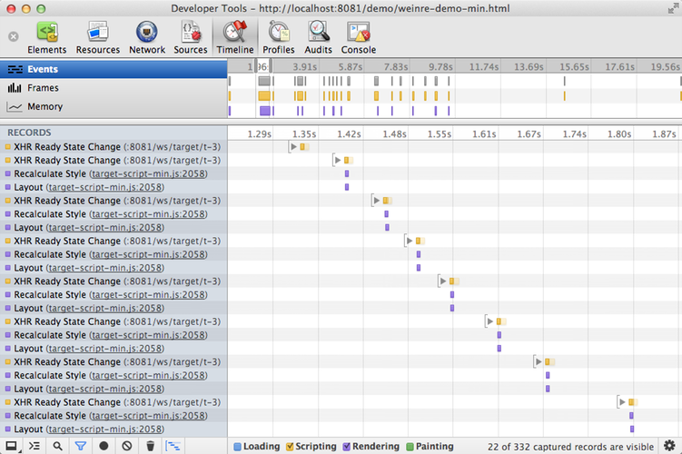

debugging mobile web apps
for:
by:


@pmuellr
http://muellerware.org/
for:
by:


@pmuellr
http://muellerware.org/
canonical links to presentation
other mobile debugging presentations by me
slide template
last modified
This presentation will cover:
first mobile platform vendor to ship real remote Web Inspector implementation from WebKit
links
Real remote Web Inspector like Safari 6 Web Inspector
links
Real remote Web Inspector like Chrome Dev Tools
links
???
Ongoing work to get weinre running on Windows Phone.
Runs applications implemented entirely in HTML, CSS and JavaScript. [link]
Also see the slide on r2d2b2g in this presentation.
links
Chrome extension allowing you to quickly see how your application looks and functions on multiple mobile devices and platforms.
links
Firefox extension to run the Boot to Gecko desktop and apps within Firefox.
links
From the web site:
links
From the web site:
links
Popular HTML, CSS, JavaScript snippet testing environment
links
Preview and inspect web designs on mobile devices.
links
proof-of-concept project for extracting and displaying dtrace-ishly precise JavaScript performance profiling
links
function run() {
rsprofiler.start("jquery profile")
runTests()
rsprofiler.stop(function(err) { ... })
}
function runTests() {
for (var i=0; i<40; i++) { runTestsDiv1(); runTestsSpan1() }
}
function runTestsDiv1() {
for (var i=0; i<1000; i++) { $("#div-1").text() }
}
function runTestsSpan1() {
for (var i=0; i<1000; i++) { $("#span-1").text($("#span-1").text()) }
}
Hover over a box! Click a box!
sudo npm -g install weinre
links
For issues with Cordova, PhoneGap, Worklight:
weinre movies here:
old rsprofiler movie here:
targets connect by:
clients connect by:
server supports CORS so that target can XHR to a cross-origin host (the weinre server)
client and target use long-polling to enable messaging to/from the server
Messages defined as functions described in WebIDL.
module weinre {
interface WeinreTargetCommands {
void registerTarget(int url, out string targetId);
void sendClientCallback(string callbackId, Object args);
void logDebug( in string message );
void logInfo( in string message );
void logWarning( in string message );
void logError( in string message );
};
}

window.clearInterval() window.clearTimeout() window.setInterval() window.setTimeout()
window.addEventListener() Node.addEventListener()
XMLHttpRequest.open() XMLHttpRequest.send() XMLHttpRequest.addEventListener()
window.openDatabase() window.console()
LocalStorage.setItem() LocalStorage.removeItem() LocalStorage.clear()
SessionStorage.setItem() SessionStorage.removeItem() SessionStorage.clear()